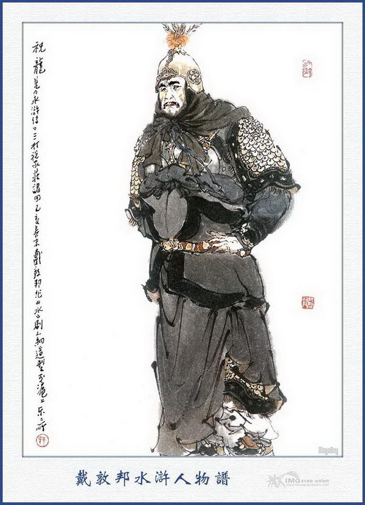
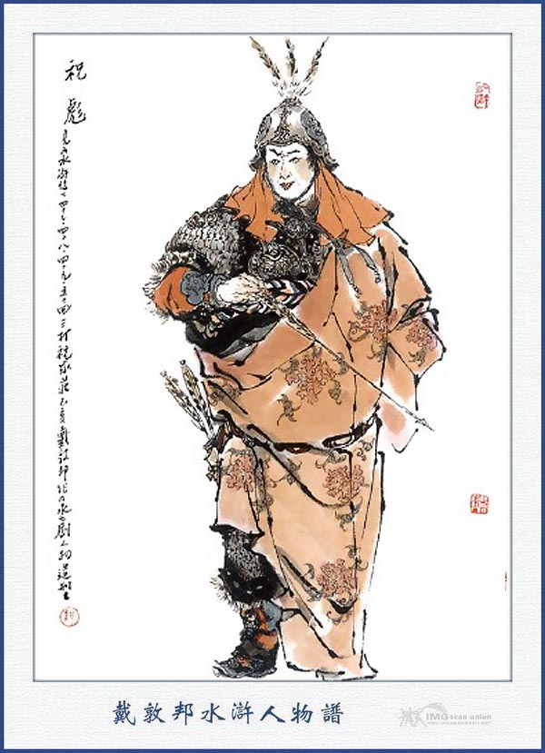
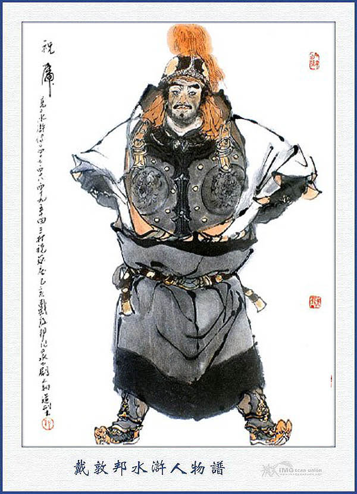
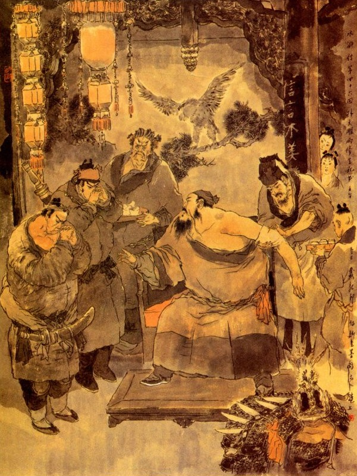
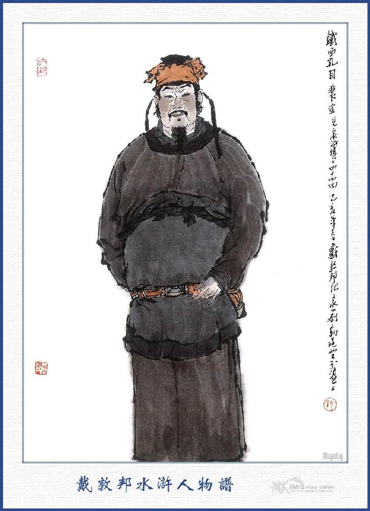
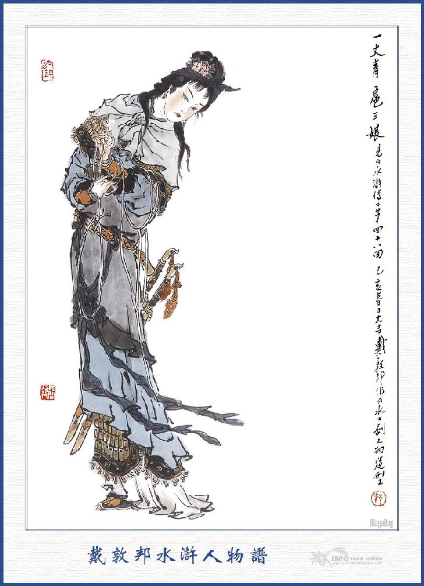
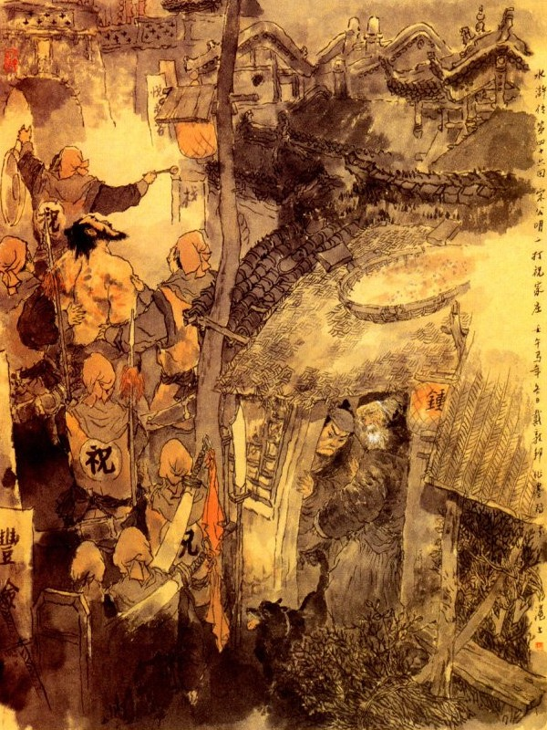

Bấy giờ Dương Hùng thấy người kia lạy chào, liền chạy ra đỡ dậy rồi gọi Thạch Tú ra để tương kiến.
Thạch Tú hỏi Dương Hùng rằng:
- Vị tráng sĩ này là ai đó? Sao lại quen với Ca Ca?
Dương Hùng nói:
- Người anh em đây họ Đỗ tên Hưng, quê ở Trung Sơn Phủ. Vì tướng mạo thô mãng, nên người ta thường gọi là Quỷ Kiểm Nhĩ. Năm trước buôn bán ở Kế Châu, gặp lúc nóng tính đánh chết một người bạn buôn, bị Quan Tư bắt được. Sau tôi thấy giỏi nghề quyền võ nễ hết sức cứu ra. Ai ngờ nay cùng gặp nhau ở đây thực là may quá.
Đỗ Hưng hỏi:
- Ân nhân đi việc quan gì mà lại tới đây?
Dương Hùng sẽ ghé vào tai Đỗ Hưng mà đem chuyện giết người ở Kế Châu và đốt nhà ở Chúc Gia Điếm cùng việc đánh nhau và mất Thời Thiên mà kể cho nghe.
Đỗ Hưng thấy vậy nói:
- Nếu vậy ân nhân không cần, tôi sẽ có cách cứu được Thời Thiên cho ân nhân.
Dương Hùng nói:
- Xin mời hiền đệ hãy ngồi chơi uống mấy chén rượu một thể cho vui.
Nói đoạn kéo Đỗ Hưng vào, ba người cùng ngồi uống rượu với nhau.
Đỗ Hưng nói:
- Tiểu đệ từ khi ở đất Kế Châu, nhờ được ân nhân cứu thoát, tới đây nhờ được một vị quan nhân ở đây, có lòng yêu mến giữ ở trong nhà, để coi sóc các công việc. Hiện nay các công việc ở nhà đó, bất cứ hàng nghìn hàng vạn, đều giao phó mặt ở tay tôi, thủy chung rất là tín nhiệm, bởi vậy tôi cũng không muốn trở về cố hương làm chi nữa.
Dương Hùng lại hỏi:
- Vị quan nhân ở đây là ai?
- Quãng trước mặt đây có dãy núi Độc Long Cương, chia làm ba ngọn, trong đó có ba thôn trang, khoảng giữa Chúc Gia Trang, phía tây Hổ Gia Trang, bên đông này là Lý Gia Trang. Trong ba thôn ấy có với một hai vạn nhân mã mà duy có Chúc Gia Trang là oanh liệt hơn cả. Thái Công ở Chúc Gia Trang là Chúc Triều Phụng, có ba người con trai là Chúc Long, Chúc Hồ và Chúc Bưu, gọi là Chúc Gia Tam Kiệt, lại có một ông giáo sư tên là Thiết Bổng Loan Đình Ngọc sức muôn không địch nổi, trong trang có tới hai nghìn trang khách thạo giỏi võ nghệ cả. Hổ Gia Trang thì Hổ Thái Công làm chủ, có một người con trai tên là Phi Thiên Hổ Hổ Thành, võ nghệ cũng hơi kha khá. Duy có một người con gái anh hùng nhất là Nhât Trượng Thanh Hổ Tam Nương, khiến đôi khẩu Nhật Nguyệt Đao ngồi trên mình ngựa không ai chống nổi. Còn thôn bên Đông tức là chủ nhân của tôi, họ Lý tên Ứng, hay khiến thanh gươm Hỗ Thiết Điểm Cương và trong lưng giắt năm con dao, giết người ngoài trăm bước như quỷ thần biến hiện như vậy. Ba thôn ấy xưa nay giao ước với nhau, thề cùng sống chết, chỉ sợ bọn Lương Sơn Bạc quấy nhiễu vay lương, nên phải phòng bị cẩn thận mà hẹn cùng nhau tiếp ứng cho nhau. Nay tôi xin dẫn hai ngài vào Đông Trang chào Lý chủ nhân tôi rồi cần viết thư để cứu Thời Thiên thì tất được.
Dương Hùng hỏi:
- Có phải Lý Đại quan nhân là Phác Thiên Bằng Lý Ứng vẫn có tiếng trong đám giang hồ xưa nay không?
Đỗ Hưng nói:
- Chính ông ta đấy.
Thạch Tú nói:
- Xưa nay tôi vẫn nghe tiếng Phác Thiên Bằng Lý Ứng là tay hảo hán ở Độc Long Cương, tới nay mới biết là ở đất này. Phải, ông ta có tiếng là người khá, chúng ta thử đến đấy xem.
Dương Hùng gọi tửu bảo tính trả tiền hàng. Đỗ Hưng nhất định không nghe nhân lấy để trả cả rồi dẫn Dương Hùng, Thạch Tú cùng đến Đông Trang.
Được một lát đến một nơi trang viện rất lớn, xung quanh xe lừa chứa nước, trong có tường vôi cao ngất, cây liễu xanh um, trước cửa có đích kiều cho người qua lại. Đỗ Hưng dẫn hai người vào cổng, đi tới Đại Sảnh, thấy hai bên có hơn hai mươi cỗ giá cắm toàn gươm giáo quân khí sáng choang một dẫy.
Đỗ Hưng bảo với hai người:
- Các ngài hãy đứng đợi đây một lát, để tôi vào nói trước và mời quan nhân ra tiếp kiến.
Đỗ Hưng đi vào một lát thì thấy Lý Ứng ra, Đỗ Hưng bèn dẫn Dương Hùng, Thạch Tú lên sảnh để chào. Lý Ứng đáp lễ cẩn thận rồi mời hai người ngồi chơi, gọi người nhà lấy rượu lên đãi.
Dương Hùng, Thạch Tú đứng dậy, kể chuyện Thời Thiên bị bắt cho Lý Ứng nghe và kêu xin viết giấy để cứu cho Thời Thiên về.
Lý Ứng nhận lời, mời thầy đồ ở trong nhà viết hộ phong thư, ký tên đóng dấu tử tế rồi sai người Phó chủ quân cỡi ngựa đem thư sang Chúc Gia Trang, để xin cho Thời Thiên về, Phó chủ quân đi rồi. Dương Hùng, Thạch Tú đều cúi đầu tạ bái Lý Ứng.
Lý Ứng bảo hai người rằng:
- Các ngươi cứ yên tâm, thư tôi đến nơi là họ thả người về ngay.
Nói xong đứng dậy mời hai người vào nhà trong, thiết đãi cơm rượu tử tế. Khi cơm nước xong, Lý Ứng lại hỏi các môn võ nghệ, thấy hai người ứng đối giỏi giang thì đem lòng kính mến vô cùng.
Vào khoảng gần trưa tên Phó chủ quản đến Chúc Gia Trang đi về, Lý Ứng cho gọi vào nhà trong để hỏi chuyện, Phó chủ quản nói:
- Chúng tôi sang đó, đưa thư vào tân Chúc Triều Phụng, Triều Phụng đã định tha cho đem về, sau ba người con thấy vậy ra dáng giận dữ, hục hặc mà giữ cả thư và người ở lại đó rồi định để đem giải lên Châu.
Lý Ứng nghe nói cả kinh mà rằng:
- Hắn với nhà ta đây đã kết đồng sinh tử với nhau. Như thế tất tha người ta thì phải, lẽ đâu lại như thế được? Việc này chắc là ngươi ăn nói không khéo, cho nên sinh sự như vậy? Đỗ chủ quản phải sang đó nói rõ đầu đuôi cho Chúc Công biết mới xong.
Đỗ Hưng vâng lời mà rằng:
- Xin chủ nhân viết cho mấy chữ thì may ra họ mới tin được.
Lý Ứng liền gọi hoa tiên, viết lên thư cẩn thận, niêm vào phong bì rồi đóng dấu ký tên ra ngoài bì, giao cho Đỗ Hưng lên ngựa sang Chúc Gia Trang.
Lý Ứng lại bảo với Dương Hùng, Thạch Tú rằng:
- Hai ngài cứ vững tâm, phong thư này tới nơi tất là họ phải tha về.
Hai người cảm tạ rồi cùng nhau ăn uống bữa chiều tại đó. Khi trời đã chiều hôm không thấy Đỗ Hưng trở về, Lý Ứng lấy làm sốt ruột, sai người đi dò xét xem sao? Được một lát thấy người báo Đỗ chủ quản đã về, Lý Ứng liền hỏi rằng:
- Có ai về đó nữa không?
- Bẩm, chỉ có một mình chủ quản về thôi.
Lý Ứng nghe nói lắc đầu mà rằng:
- Sao quái lạ thế? Mọi khi vẫn tử tế, sao mà hôm nay lại trở mặt như thế được?
Nói xong đứng đạy đi ra. Đại Sảnh. Dương Hùng, Thạch Tú cũng đứng dậy theo ra. Khi ra tới Đại Sảnh, thấy Đỗ Hưng xuống ngựa đi vào, mặt đỏ bầng bãi, hơi thở hồng hộc, không sao nói được nên lời.
Lý Ứng hỏi:
- Công việc thế nào; ngươi nói cho ta nghe?
Đỗ Hưng đứng một lúc, tỉnh người lại rồi mới nói rằng:
- Chúng tôi đi sang tới Chúc Gia Trang, khỏi lầu thứ ba thì gặp ba anh em Chúc Long, Chúc Hổ, Chúc Bưu ở đó. Chúng tôi cất tiếng chào thì Chúc Bưu quát ngay lên rằng: "Đông Nhân chúng tôi có bức thư sang hầu". Chúc Bưu nghe dứt lời thì biến ngay sắc mặt mà mắng rằng: "Chủ nhân nhà anh không biết gì cả. lúc sớm đã sai đứa đem thư sang, để xin tha cho tên Thời Thiên là giặc ở Lương Sơn, nhưng mà ta đây định đem lên giải phủ. Còn đến đây làm gì nữa?" Tôi lại nói: "Tên Thời Thiên không phải là giặc ở Lương Sơn, hắn là người ở Kế Châu đến thăm chơi với Đông Nhân của tệ trang đây, vậy để ngày mai Đông chủ tôi xin làm đền lại vào đó. Xin các ông rộng ơn mà tha hắn ra cho.” Ba anh em họ Chúc đều thét lên rằng: "Không tha. Không tha.” Tôi lại nói: "Xin quan nhân nom qua bức thư của ông chủ tôi sẽ biết ". Chúc Bưu cầm lấy thư không bóc ra xem, vội xé nát cả thư mà sai thét người đuổi tôi ra cửa. Chúc Bưu, Chúc Hổ lại nói rằng: "Đừng nên trêu tính nóng lão gia, gọi là…” Ba thằng súc sinh thực vô lễ quá, chúng tôi không dám nói ra đây. Hắn lại còn bảo rằng: "Không khéo thì Lý… cũng là bọn giặc Lương Sơn, để ta bắt mà giải lên quan một thể.” Nói đoạn lại quát trang khách toan bắt cả tôi giữ lại ở đó, sau tôi nhảy tót lên ngựa phi thẳng một mạch về đây, trong lòng căm tức không biết tới đâu mà kể? Thực là uổng công giao kết bao lâu, tới nay không còn chút gì là tử tế cả.

CHÚC LONG

CHÚC HỔ

CHÚC BƯU
Lý Ứng nghe nói, mặt bầng bầng như lửa cháy, không sao cầm đặng, liền thét trang khách mau mau đóng ngựa để đi.
Dương Hùng, Thạch Tú can rằng:
- Xin quan nhân hãy thư tâm lại, không nên vì chúng tôi mà bỏ mất nghĩa khí của các ngài từ xưa tới nay.
Lý Ứng nhất định không nghe vào phòng mặc áo giáp hoàng kim, trước sau có miếng yểm tâm bằng mặt thú, ngoài khoác áo đại hồng bào, lưng giắt năm khẩu phi đao, đầu đội mũ cánh phượng, tay cầm thanh giáo điểm cương, ra chọn lấy ba trăm trang khách để sắp cửa cùng đi. Đỗ Hưng cũng mặc giáp cầm thương lên ngựa, dẫn hai mươi quân kỵ đi theo. Dương Hùng, Thạch Tú cũng vác dao đi theo sau ngựa Lý Ứng mà kéo thẳng sang Chúc Gia Trang. Khi mặt trời gấn tới núi Độc Long, Lý Ứng liền cho quân mã dàn thành trận thế rồi gọi ba con họ Chúc ra mà mắng nhiếc.
Nguyên Chúc Gia Trang làm chính trêu núi Độc Long, xung quanh có hào rồng, trong có ba tầng thành xây toàn bằng đá rắn, cao ước hai trượng có hơn. Trước sau có hai tòa cửa, trong đều có địch kiều qua lại, bốn bên tường đều có quân khí sáng choang tại các điểm ở đó. Trên gác cổng để trống trận, cùng các đồ thanh la, đề phòng khi động dụng. Bấy giờ Lý Ứng trên mình ngựa, quát mắng mấy câu thì thấy cửa trang tung mở rồi thấy Chúc Bưu cưỡi ngựa đỏ, dẫn năm sáu mươi tên kị xông ra.
Lý Ứng trỏ mà mắng rằng:
- Quân kia! Miệng chưa ráo hơi sữa, cha các ngươi đã với ta kết nghĩa cùng nhau, đồng sinh đồng tử để bảo vệ lấy thôn trang. Mọi khi nhà ngươi có việc gì, cần người ta phải trả, cần đồ đạc ta phải đưa, thế mà nay có một người quen, đã hai phen viết thư, ngươi cũng không trả, lại còn xé thư mà sỉ nhục đến tên ta là nghĩa lý gì vậy?
- Nhà ta tuy có giao kết, thề cùng đồng tâm sống chết là cốt để trừ giặc Lương Sơn mà trừ giặc tai hại cho thiên hạ; Nay ngươi lại liên kết với giặc Lương Sơn thì tất là trong lòng mưu phản, khi nào ta chịu tha cho.
- Bây bảo người gì ở Lương Sơn. Bay đổ cho người lương thiện như thế, phỏng đáng tội gì?
Chúc Bưu cười rằng:
- Tên giặc Thời Thiên đã thú nhận cả rồi, ngươi còn chống chế làm chi cho mệt? Không lui về thì ta bắt cả mà giải quan tất cả bây giờ?
Lý Ứng cả giận, vỗ ngựa múa gươm vào đánh Chúc Bưu, Chúc Bưu cũng phóng ngựa ra đánh Lý Ứng. Đôi bên đánh nhau trước mặt núi Độc Long chừng bảy tám mươi hiệp thì Chúc Bưu không địch nổi Lý Ứng, bèn giật ngựa để chạy, Lý Ứng phóng ngựa đuổi theo.
Chúc Bưu ngồi trên mình ngựa, cắp giáo vào một bên rồi tay tả cầm cung, tay hữu lấy tên, quay nhắm bắn vào Lý Ứng, Lý Ứng nghe tiếng dây cung bật, liền né mình để tránh thì bị mũi tên bắn phải cánh tay giật mình ngã ngay xuống ngựa, Chúc Bưu liền quay lại hò người ra bắt. Dương Hùng, Thạch Tú thấy vậy, thét lên một tiếng rồi múa dao xông vào để đánh Chúc Bưu, Chúc Bưu không địch nổi hai người, liền quay ngựa về để chạy, bị Dương Hùng chém cho một nhát ở cẳng sau ngựa, con ngựa hăng máu đạp hất luôn mấy cái làm cho Chúc Bưu ngã lăn xuống đất.
Tụi quân kỵ Chúc Gia Trang thấy vậy, đều bắn tên tua tủa. Dương Hùng, Thạch Tú mình không giáp che tên, đành bỏ Chúc Bưu mà chạy mau cho thoát, Đỗ Hưng cứu Lý Ứng vắt lên mình ngựa chạy về trước, còn Dương Hùng, Thạch Tú theo đám trang khách chạy về sau. Bọn nhân mã Chúc Gia theo đuổi hai dặm, thấy trời đã tối, liền kéo nhau trở về mà không đuổi nữa. Đỗ Hưng đem Lý Ứng về tới nhà, vợ con đổ ra phục dịch, nhổ mũi tên lên, cởi áo giáp ra, đem thuốc kim sang rịt vào chỗ bị thương rồi cùng nhau bàn chuyện Chúc Gia Trang.

Dương Hùng, Thạch Tú nói với Đỗ Hưng rằng:
- Việc này đã xảy ra như thế thì Thời Thiên khó lòng được thoát, thực anh em chúng tôi làm phiền lụy đến Đại quan nhân, không biết lấy gì mà báo đáp được. Vậy anh em chúng tôi phải trở về Sơn Bạc cầu cứu với Tiều Cái, Tống Giang cùng các vị Đầu Lĩnh đến đây để báo thù cho Đại quan nhân và cứu Thời Thiên mới được.
Nói đoạn đến từ tạ với Lý Ứng để cin đi. Lý Ứng bảo với hai người rằng:
- Việc này không phải là tôi không dụng tâm, song sự xảy ra như thế thì không biết làm sao cho được, xin hai ngài tha lỗi cho.
Đoạn rồi gọi Đỗ Hưng lấy vàng bạc đưa tặng hai người Dương Hùng, Thạch Tú nhất định từ chối không nhận. Sau Lý Ứng cố vật nài mãi, hai người đành phải vâng nhận tiền nong rồi cùng nhau bái tạ Lý Ứng mà đi ra. Đỗ Hưng đưa chân hai người ra đến đường cái, trỏ lối cho đi rồi từ biệt trở về thôn trại, Khi Dương Hùng, Thạch Tú đi gần tới Lương Sơn Bạc, xa xom thấy một tòa tửu điếm mới lập, có Thạch Dũng coi giữ ở đó.
Bấy giờ Thạch Dũng thấy hai người lạ mặt, hỏi thăm lối lên sơn trại, liền chạy đến hỏi rằng:
- Các ngài ở đâu đến đây? Hỏi thăm lên sơn trại có việc gì?
Dương Hùng đáp:
- Chúng tôi ở Kế Châu đến đây.
- Chẳng hay là Thạch Tú túc hạ đó chăng?
- Tôi là Dương Hùng, người anh em tôi đây là Thạch Tú. Sao Đại Ca lại biết đến tên Thạch Tú được?
Thạch Dũng vội vàng đáp rằng:
- Chết nỗi! Thế mà chúng tôi không biết, dạo trước Đới Tung Ca Ca có ở Kế Châu về, có thuật đến đại danh của huynh trưỏng, nay được ngài lên đây thực là may lắm.
Nói đoạn ba người cùng khiêm nhượng ngồi nói chuyện với nhau. Dương Hùng đem các chuyện trước thuật hết cho Thạch Dũng nghe. Thạch Dũng liền sai đem rượu tiếp phong ra mời hai người rồi vào Thủy Đình bắn tên ra hiệu. Được một lát có tên tiểu lâu la ra chở một chiếc thuyền trong đám bụi lau ra để đưa cào sơn trại. Kế tới đến Thạch Dũng lên trại báo trước rồi thấy Đới Tung, Dương Lâm xuống núi, để đón vào Đại trại. Bấy giờ các Đầu Lĩnh nghe nói, có hảo hán mới vào nhập đảng thì bảo nhau tới Tụ Nghĩa Sảnh để tiếp đãi. Đới Tung. Dương Lâm dẫn Dương Hùng, Thạch Tú. Tiều Cái hỏi tung tích hai người, Dương Hùng liền đem chuyện thâm thúy về võ nghệ kể cho mọi người nghe, ai nấy đều lấy làm vui mừng mà nhường ghế cùng ngồi nói chuyện.
Dần dà Dương Hùng kể đến chuyện đi qua Chúc Gia Trang, có người anh em là Thời Thiên, ăn cắp con gà của điếm, đến nỗi đốt nhà bị bắt sinh sự lôi thôi, kể hết cho các vị nghe mà nói rằng:
- Ba con nhà họ Chúc rất là vô lễ, trong khi đánh nhau với Lý Ứng chỉ một miệng chưởi mắng bọn hảo hán ở Lương Sơn Bạc mà thề quyết bắt cả bọn mà đem nộp quan thì mới thoả, anh em chúng tôi nghe thấy vậy, rất là khổ cực trong lòng, song sức yếu thế cô đành phải chịu mà không làm sao được.
Tiều Cái nghe dứt lời, đùng đùng nổi giận mà quát lên rằng:
- Quân đâu! Đem chém hai người này đi cho ta.
Tống Giang nghe nói vội gạt đi rằng:
- Sao Ca Ca lại vội nóng thế? Hai vị tướng sĩ, xa xôi nghìn dặm tới đây cũng cốt mong cùng mình, để đồng tâm hiệp lực, vậy chưa chi Ca Ca đã sai chém là nghĩa làm sao?
Tiều Cái nói:
- Bọn hảo hán ở Lương Sơn Bạc chúng ta, sau khi giết bỏ Vương Luân, đều lấy trung nghĩa làm trọng, mong cho thi hành ân đức ra khắp dân gian, anh em ở trên núi đi đâu cũng không dám làm chi mất tiếng mà các vị mới lên đây cũng lừng lẫy ra tay hào kiệt, không hề chịu kém với ai? Nay hai người này dám đem danh nghĩa hảo hán Lương Sơn Bạc đi ăn cắp con gà, để đến nỗi giảm mất giá trị anh em, vậy xin chém hai người để làm hiệu lệnh rồi tôi sẽ đem quân đi đánh Chúc Gia Trang, cho khỏi mang tiếng Lương Sơn Bạc mới được. Chúng đâu, đem chém mau.
Tống Giang cản ngăn rằng:
- Không được! Ca Ca không nên thế. Ca Ca không nghe kỹ, vừa rồi hai hiền đệ đã nói: Vì Thời Thiên là hạng người thế nào, cho nên mới bị nạn Chúc Gia Trang như thế, có phải hai vị hiền đệ làm điếm nhục sơn trại đâu? Bình nhật tôi cũng thường nghe nói Bọn Chúc Gia Trang muốn đối địch với sơn trại ta đây, song xin Ca Ca hãy thư tâm bới giận, hiện nay sơn trại ta binh lương sẵn đủ không kém chi ai, vả chăng cũng không phải ta đây sinh sự, đó chẳng qua là họ muốn bới lông tìm vết gây chuyện với ta, bất nhược tiện đây ta trừ khử nó đi, để kiếm lấy mấy năm lương thực, chẳng hóa ra uy thế cho sơn trại ta lắm sao? Duy Ca Ca là ông chủ sơn trại không thể chốc lát mà khinh động ngay được, vậy tiểu đệ tuy là kẻ bất tài cũng xin lĩnh một chi binh mã, nhờ anh em xuống núi một phen, nếu không trừ nổi Chúc Gia Trang thì quyết thề không về sơn trại nữa. Tiểu đi phen này một là giữ lấy thanh giá cho sơn trại, hai là khỏi bị chúng sỉ nhục chê bai, ba là kiếm ít tiền nong để cùng chi dùng mà bốn là mời Lý Ứng lên nhập đảng cho vui, xin Ca Ca nghĩ như thế mới được.
Ngô Học Cứu nói:
- Tống Minh Ca Ca dạy như thế tức phải. Có lẽ nào giết hại chân tay trong sơn trại cho đành.
Đới Tung nói:
- Nếu Tiểu Ca Ca không bằng lòng thì xin chém ngay tiểu đề là hơn, chớ nên làm mất đường lối đi lại của anh hùng như thế.
Các Đầu Lĩnh cùng ra sức khuyên can, Bấy giờ Tiều Cái mới thư tâm mà tha cho Dương Hùng, Thạch Tú. Hai người cùng đem lời thành thực mà tạ cùng các vị Đầu Lĩnh.
Tống Giang lại đem lời nói với hai người:
- Hiền đệ chớ nên đem lòng nghi ngại, vì hiệu lệnh của sơn trại tất phải như thế, dẫu Tống Giang tôi có lỗi cũng phải chém ngay, chứ không thể nào tha được. Hiện nay mới lập Thiết Diện Khổng Mục Bùi Tuyên là Quân Chính Tư, phàm các việc thưởng phạt, đều có điều lệ phân minh, xin hai hiền đệ biết cho.

BÙI TUYÊN
Dương Hùng, Thạch Tú đều vâng lời tạ lại rồi cùng ngồi vào vai dưới Dương Lâm. Bấy giờ tiểu lâu la trong sơn trại vào để chào hai vị Đầu Lĩnh mới, nhất diện đặt tiệc ăn mừng rồi dọn phòng cho hai người nghỉ và cắt cho mỗi người mươi tên tiểu lâu la để hầu.
Sáng hôm sau khi yến tiệc xong, trong sơn trại lại tụ họp để thương nghị các việc, Tống Giang cho gọi Bùi Tuyên để chọn người đi xuống núi mà các vị Đầu Lĩnh để cùng xuống đánh Chúc Gia Trang. Khi bàn định xong, ngoài Tiều Cái làm chủ sơn trại thì có Ngô Học Cứu, Lưu Đường, ba anh em họ Nguyễn, cùng Lã Phương, Quách Thịnh ở lại coi giữ sơn trại và các người coi giữ bến nước, trông tửu điếm đều giữ nguyên chức cũ. Lại cắt các vị Đầu Lĩnh mới đến là Mạnh Khang, để thay Mã Lân giám đốc thuyền chiến, còn các vị Đầu Lĩnh chia làm hai đội chỉnh bị mà ra đi.
Đội thứ nhất Tống Giang, Hoa Vinh, Lý Tuấn, Mục Hoằng, Lý Quỳ, Dương Hùng, Thạch Tú, Hoàng Tín, Âu Bằng, Dương Lâm, dẫn ba nghìn tiểu lâu la, ba trăm quân mã xuống núi đi trước; Đội thứ nhì Lâm Xung, Tần Minh, Đới Tung, Trương Hoành, Trương Thuận, Mã Lân, Đặng Phi, Vương Nụy Hổ, Bạch Thắng, dẫn ba nghìn tiểu lâu la, cùng ba trăm quân kỵ, tiếp ứng đi sau. Lại định cho hai tiểu trại ở bến Kim Sa và bến Áp Chủy chỉ để Tống Vạn và Trịnh Thiên Thọ coi giữ, còn thì phải vận lương đi tiếp ứng việc quân. Khi đó Tiều Cái đi đưa xuống khỏi núi rồi, Tống Giang cùng các vị Đầu Lĩnh kéo quân ra đi. Khi tới núi Độc Long còn cách chừng hơn một dặm, liền cho tiền quân hạ trại ở đó.
Tống Giang ngồi trong trướng bàn với Hoa Vinh rằng:
- Ta nghe đường vào Chúc Gia Trang rất là tào tạp khó hiểu; chưa có thể nào mà tiến binh được ngay. Vậy sai hai người đi dò là đường sá trước rồi sẽ kéo binh đến đánh là hơn. Nhưng không biết trong đám anh em có ai là người đi được.
Vừa nói dứt lời thì thấy Lý Quỳ đứng lên nói rằng:
- Dám bẩm Ca Ca, tôi bấy lâu rỗi rãi chưa giết một người nào. Vậy xin Ca Ca cho tôi đi trước.
Tống Giang nói:
- Ngươi đi không được, có phải là phá trận đánh giặc sẽ dùng người đi trước, còn việc đi do thám này, không thể dùng ngươi được.
Lý Quỳ cười mà rằng:
- Một cái xóm khốn nạ ấy, cần gì mà Ca Ca phải khó nhọc, cứ để cho tôi mang vài trăm lâu la sấn vào gặp thằng nào chém chết thằng ấy là xong, việc gì phải do thám cho phiền?
Tống Giang quát rằng:
- Không được nói càn, ngươi hãy đứng vào xó vách kia, bao giờ gọi đến sẽ hay.
Lý Quỳ bất đắc dĩ phải chạy ra mà nói một mình rằng:
- Đánh một thôn con này mà phải làm rộn lên như thế.
Tống Giang gọi Thạch Tú đến mà nói:
- Hiền đệ đã đi qua đó một lần, vậy hiền đệ khá cùng Dương Lâm đi do thám đường lối một phen xem sao?
Thạch Tú nói rằng:
- Hiện nay binh mã kéo đến ầm ầm như thế, tất trong họ phải phòng bị rất nghiêm, vậy chúng tôi phải ăn mặc giả dạng thế nào thì mới vào lọt được?
Dương Lâm nói:
- Để tôi giả làm pháp sư đi giải ma, mình giắt đoản đao tay cầm pháp hoàn, khua lắc ầm lên rồi bác cứ nghe pháp hoàn mà đi gần nhau mới được.
Thạch Tú nói:
- Khi tôi ở Kế Châu hay đi bán củi, để tôi gánh một gánh củi rồi cùng giắt đoản đao vào lưng, nếu có động dụng việc gì thì đòn gánh ta quay ra cũng được rồi.
Dương Lâm khen phải mà rằng:
- Nếu vậy anh em ta phải sửa soạn mau mau, để sáng mai đi sớm cho được việc.
Sáng hôm sau Thạch Tú gánh một gánh củi đi vào thôn trước. Khi đi được hơn hai dặm, thấy đường lối ngang tắt quanh co, bốn mặt đều có ao rãnh giống nhau, cỏ cây rậm rạp, rất là khó hiểu. Thạch Tú đặt gánh củi đứng nghĩ một lát thì thấy tiếng pháp hoàn leng keng ở phía sau. Đoạn rồi thấy Dương Lâm đầu đội nón chiên rách, mình mặc áo pháp sư cũ, tay cầm pháp hoàn vừa khua lắc vừa đi đến. Thạch Tú trông trước trông sau không thấy ai, liền gọi Dương Lâm mà bảo rằng:
- Ở đây đường tắt ao nhiều, không biết lối nào với lối nào đi về với Lý Ứng trước cả. Hôm ấy trời đã chiều hôm, họ quen đi vun vút, mình cũng không sao mà nhận được.
Dương Lâm nói:
- Không cần tìm đường tắt làm gì, mình cứ chọn những chỗ đường cái mà đi cũng được rồi.
Nói đoạn Thạch Tú lại gánh gánh củi lên vai mà theo đường cái đi vào. Chợt thấy trước mặt có mấy nóc nhà và mấy ngôi hàng thịt hàng rượu ở đó. Thạch Tú liền đến trước tửu điếm rồi đắt gánh xuống vào nghỉ trong hàng, chàng nhác trông các cửa hàng đều để gươm giáo sáng quắc, người nào người ấy đều có hai miếng vải vàng ở đằng trước đằng sau, viết chữ Chúc rất lớn, cả các người qua lại ngoài đường cũng như thế cả.
Thạch Tú thấy vậy, liền chạy ngay đến trước mặt một người già cả, chấp tay vái chào mà hỏi:
- Thưa cụ, cụ làm ơn bảo cho chúng tôi: Phong tục ở đây là thế nào? Sao lại bày quân khí ngoài cửa như vậy?
Ông già hỏi:
- Bác là người ở đâu đến đây mà lại không biết? Nếu vậy bác phải đi mau mới được.
- Thưa cụ, tôi là bọn buôn táo ở Sơn Đông chẳng may mất cả vốn liếng, không dám về làng, phải đẵn củi đến đây để bán, nhưng không biết phong tục và đường lối ở đây, xin cụ bảo giúp cho.
- Thôi, anh hãy nấp vào một nơi, ở đây sắp sửa đánh nhau to đấy.
- Thưa cụ, đây là một chỗ thôn mạc tốt thế này, có việc gì mà đến đánh nhau to?
- Nếu quả thị bác không biết, để tôi nói cho mà nghe. Chỗ này gọi là Chúc Gia Thôn, trên núi kia tức là dinh Chúc Triều Phụng. Nay vì bất hòa với bọn hảo hán Lương Sơn, họ kéo quân mã đến đóng ở cửa thôn, vì còn sợ đường lối ngoắt ngoéo nên chưa dám vào. Hiện nay trong Chúc Gia Trang hạ lệnh cho tất cả trong thôn chúng tôi, nhà nào cũng phải sắp sẵn khí giới và chọn những người khỏe mạnh, để đợi lệnh mà ra cứu ứng đánh nhau.
- Vậy thôn cụ đây có bao nhiêu nhà ở.
- Những một thôn Chúc Gia chúng tôi đây cũng có tới hai vạn người, còn hai bên đông tây lại có hai thôn nữa, thôn bên đông là Phác Thiền Bằng Lý Ứng Đại quan nhân và thôn bên tây là Hổ Thái Công có người con gái là Hổ Tam Nương biệt hiệu là Nhất Trượng Thanh rất là tài giỏi.

HỔ TAM NƯƠNG
- Thế thì còn sợ gì Lương Sơn Bạc nữa?
- Phải, khi tôi mới đến đây không thuộc đường đi cũng có lẽ bị bắt chứ chẳng chơi.
- Sao cụ lại nói thế?
- Trong thôn tôi đây, trước người ta thường có câu rằng: "Nực cười Chúc Gia Trang. Đường lối rất hiểm ác. Lúc nào còn dễ dàng, khi ra khó lòng thoát! "
Thạch Tú nghe đến đó, liền khóc òa lên, cúi rạp xuống lạy ông già mà nói:
- Chúng tôi là một kẻ giang hồ lưu lạc, tiêu hết tiền nong, về làng không được, nay gánh củi đến đây để bán, lỡ khi gặp cuộc đánh nhau thì lúng túng không biết lối ra, thực là khổ quá. Xin Gia Gia thương đến chúng tôi mà chỉ bảo đường lối cho chúng tôi ra, tôi xin đem gánh củi biếu Gia Gia cả.
Lão già có ý thương hại mà rằng:
- Khi nào tôi nỡ lấy gánh củi của anh, anh hãy vào đây ăn cơm uống rượu đã.
Thạch Tú bái lạy gánh gánh củi theo ông lão vào trong nhà. Ông lão đem cơm rượu ra cho Thạch Tú ăn uống.
Đoạn rồi Thạch Tú lạy tạ mà nói:
- Xin Gia Gia làm phúc trỏ đường lối cho ra.
Ông già nói:
- Bây giờ anh đi đường trong thôn, cứ thấy chỗ nào có cây dương trắng thì rẽ theo lối đó. Bất vấn là đường rộng hay hẹp, hễ có cây dương trắng là đường sống bằng không thì toàn là đường chết cả. Nếu loanh quanh lẫn lối thì không có đường đi mà không khéo chết ở giữa đường cũng nên. Trong đó toàn rắc chông gai hết cả, nếu đi lạc vào đó là họ tóm được ngay, không còn trốn đâu cho thoát nữa. Thạch Tú lạy ta rồi hỏi rằng:
- Dám hỏi cao tính Gia Gia là gì?
Lão già đáp:
- Trong thôn này toàn họ Chúc cả, duy có tôi là họ Chung Ly ở đây mà thôi.
Thạch Tú nói:
- Bây giờ cụ cho chúng tôi được ăn uống no say, mai sau có dịp đền ơn cụ.
Đương khi nói chuyện thì bỗng thấy phía ngoài ầm ầm cả lên rồi thấy người nói lao xao, bắt được một anh đi do thám đem về để nộp. Thạch Tú lấy làm khinh ngạc, theo ông già ra xe, thấy một nhóm bảy tám người quân dong một anh chàng đi qua. Khi nom kỹ thì chính là Dương Lâm, bị chúng cởi trần trói chặt mà dong đi tới đó.

Thạch Tú đau đớn trong lòng, vờ hỏi anh kia rằng:
- Người phải bắt kia là một người nào. Làm sao lại trói như thế?
Ông già đáp:
- Anh không nghe họ nói: Là bắt người đi do thám của Tống Giang đó sao?
- Sao nó để cho bắt được như thế?
- Thằng ấy to gan lắm, dám một mình giả dạng làm pháp sư vào do thám ở đây. Đường đi không biết cứ đâm vào đường cái để đi làm gì không chết. Người ta thấy cậu đi loạng choạng lầm đường, tất là họ báo quan nhân để bắt chứ ai tha? Vừa rồi hắn còn rút dao ra đâm chết bốn người, sau trong thôn kéo ra đông quá, cậu không sao địch nổi, đành phải để cho họ bắt mới xong. Có người nhận biết anh ta là Cẩm Báo Tử Dương Lâm đấy.
Nói vừa dứt lời, bỗng ở ngoài quát lên rằng:
- Đệ Tam Quan Nhân trên trang, sắp đi tuần qua đó. Thạch Tú ghé vào chỗ khe cửa nom ra thì thấy phía trước có hai mươi đôi gươm trường, phía sau có đến năm người cưỡi ngựa, cung tên ở tay, lại có bốn năm đôi ngựa tuần đi dóng nhau; mũ giáp chỉnh tề, lưng đeo cung tên, tay cầm gươm bạc đi giữa.
Thạch Tú nom thấy người đó lại giả vờ hỏi ông già rằng:
- Vị tướng công đi đó là ai?
- Người ấy là Chúc Bưu, con thứ ba của Chúc Triều Phụng, sắp kết duyên với Hổ Tam Nương bên thôn đó. Nhà ông ta có ba người con, nhưng người này giỏi hơn cả.
Thạch Tú lại vái ông già mà rằng:
- Xin cụ làm ơn chỉ lối cho tôi ra.
Lão già nói:
- Hôm nay đã chiều rồi, nếu ra đây mà gặp đánh nhau thì anh nguy mất.
- Vậy xin Gia Gia cứu tôi với.
- Anh hãy ở nhà tôi một đêm, sáng mai vô sự thì mới có thể đi được.
Thạch Tú phải vâng lời bái tạ rồi ở lại đó. Được một lát nghe thấy bốn năm tin thám mã đến báo rồi có người dặn các nhà rằng: "Đêm nay cứ trông hiệu đèn đỏ là ra công gắng sức để bắt bọn Lương Sơn mà giải quan lấy thưởng.
Bấy giờ Thạch Tú lại hỏi ông già:
- Người đó là ai?
- Ông ấy là quan Bộ Đạo tuần tiễu ở đây, ước hẹn đêm nay là bắt Tống Giang đó.
Thạch Tú nghe nói, trong lòng vẫn vơ nghĩ ngợi hồi lâu rồi thắp đóm đi vào nhà sau để ngủ.
Nói về quân mã Tống Giang đóng ở ngoài cửa thôn, đợi mãi không thấy Dương Lâm, Thạch Tú về báo, liền sai Âu Bằng đi theo ra ngoài cửa thôn để thám thính xem sao.
Âu Bằng đi thám thính rồi trở về báo rằng:
- Khi vào khỏi cửa thôn, thấy người nói xôn xao là mới bắt được một tên thám tử, sau thấy địa thế khuất khúc khó hiểu, nên tôi đành phải trở về mà không dám vào nữa.
Tống Giang nghe báo cả giận mà rằng:
- Nếu vậy thì hai anh em tất là bị bắt mất rồi, ta đợi làm sao được nữa? Đêm nay ta phải tiến binh mau mau đẻ đánh cứu anh em mới được, chẳng hay các vị Đầu Lĩnh nghĩ sao?
Vừa nói xong thì thấy Lý Quỳ kêu lên rằng:
- Tôi xin đi đánh trước, xem chúng nó thế nào?
Tống Giang nghe nói, liền truyền tướng lệnh cho quân sĩ nghiêm đội ngũ để tiến đánh: Lý Quỳ, Dươn Hưng đi đội thứ nhất làm tiên phong. Lũ Lý Tuấn dẫ đầu làm hậu tập. Mục Hoằng đi đạo quân bên tả, Hoàng Tín đi bên hữu, Tống Giang, Hoa Vinh, Âu Bằng đi giữa mở cờ rong trống, dàn gươm múa phủ rồi ba quân thẳng kéo tới Chúc Gia Trang.
Khi đi đến Độc Long Cương thì trời đã gần tối, Tống Giang liền thôi thúc tiến quân ra sức đánh phá Chúc Gia Trang. Lý Quỳ cởi trần trùng trục, tay cầm song phủ, hăng hái xông vào gần đến trước cửa trang thì thấy đích kiều đã cất lên cao mà trong cửa trang không có đèn đóm chi cả. Lý Quỳ thấy vậy, liền lội sấn xuống nước để xông vào.
Dương Hùng ngăn lại mà rằng:
- Không được, cửa trang đóng chặt thế kia tất là có kế sách, phải đợi xuống đến đây để bàn định xem sao?
Lý Quỳ nóng tính mắng lên rằng:
- Thằng cha già Chúc Thái Công đâu? Có Hắc Toàn Phong Gia Gia ở đây.
Chàng mắng chửi luôn mấy tiếng cũng không thấy ở trong động tĩnh chi cả, Được một lát quân mã đi giữa của Tống Giang tiến đến. Dương Hùng bèn đem tình hình bảo cho Tống Giang biết.
Tống Giang ngừng nom lên trên trang, quả nhiên không thấy quân mã gươm giáo thì trong lòng lấy làm nghi hoặc rồi chợt nghĩ một mình mà nói lên rằng:
- Chết rồi! Cái này ta lầm rồi. Trong Thiên Thư đã nói: Việc binh không nên bạo động, vậy mà ta vội vàng đem quân vào tận đến đây, thực khờ dại quá! Bây giờ trong trang không thấy động dạng chi, chắc là họ mưu kế chứ không, âu ta phải lui quân mau mới được.
Lý Quỳ nghe nói, kêu lên rằng:
- Ca Ca, quân mã đã kéo đến đây, lẽ nào lại chịu lui. Để tôi đánh xông vào trước rồi, cứ vòng theo tôi mà đi.
Bấy giờ trang khách ở trong, thấy quân mã Tống Giang đã kéo đến đó liền nổi hiệu pháo, bật mấy trăm bó đuốc lên rồi đứng trên chòi canh bắn xuống rào rào như mưa. Tống Giang thấy vậy, liền kéo quân về lối cũ.
Chợt đâu thấy toán hậu quân của Lý Tuấn, sôi lên sùng sục rồi thấy kêu lên rằng:
- Đường về trắc trở, tất là có quân phục ở đâu đây.
Tống Giang nghe vậy, liền truyền cho quân ngựa xông pha bốn mặt để tìm lối đi. Lý Quỳ múa đôi phủ chạy ngược chạy xuôi, toan tìm người để chém, song trước sau không thấy một tên trang khách nào. Chợt lại thấy trên núi Độc Long nổi một tiếngn hiệu nữa rồi bốn bên bỗng kêu hò ầm ĩ cả lên làm cho Tống Giang kinh ngạc rụng rời không biết lối nào mà giờ.
Mới hay:
Anh hùng lại gặp anh hùng,
Những tay thao lược non sông còn nhiều.
Giữa trường khói lửa đìu hiu,
Tâm can phải vững cơ mưu phải già,
Ngất trời một trận phong ba,
Non gan hồ dễ vượt qua tới ngàn?
Sinh tồn ở cõi nhân gian,
Ai ơi! Trông đó mà toan lấy mình.
Lời bàn của Thánh Thán
Người ta nói rằng: Có chém tre, gỡ rắn, mới biết sức dao hay; Vậy có gặp sự khó khăn mới biết tay kỳ bút! Hồi này cốt tả Tống Giang đánh Chúc Gia Trang. Hỡi ôi! Đánh Chúc Gia Trang cũng chỉ tầm thường của sự chiến đấu, sao đủ triển tài năng diễn tả của Thi Nại Am? Cho nên chưa chế ra văn, đã trước chế ra đề, tả bên đông Chúc Gia, có một Lý Gia Trang, bên tây Chúc Gia, thêm một Hồ Gia Trang, ba trang liên kết với nhau, thấy như giữa đưa đông cứu, đánh giữa thì đông tây xô lại cứu. Ôi như thế thấy đề tài nghe khó khăn thay! Khác nào sau ngựa chạy dông một cương khôn giữ. Lửa rối nổi lên, một tay khôn chữa. Thi Nại Am mới hồi lòng gấm, giơ tay vóc, uốn lời mềm, chấm mực tốt mà trước khi Dương Hùng, Thạch Tú chưa đến Lương Sơn, đã tả Lý Ứng bên đông giơ tay hữu. Vào tới hồi này, Tống Giang đem mười sáu viên hồ tướng, lộ máu đánh ra, toan sinh cầm Tây Hổ, đó gọi là giở đến tay tả mà phải chạy đông tây muốn diệt Chúc Gia Trang mà chẳng tưởng dễ như trói một con gà vậy?
Đó! Thi Nại Am đã đem đầu đề khó ra, tới lúc vào đề lại có phép đảo đi, được kheo đến thế? Người nào đem cuối thiên ra bàn vắn nói dài, tức chưa hiểu sự đó, sao chẳng xem trù tính tự đầu thiên, tới khi hạ bút, tả ra thấy muôn phần khó vậy.
Xem tả Lý Chúc đánh nhau, thế lực ngang nhau, chưa lấy làm thú còn ngại nhân đó mà hai nhà không chịu ngừng tay, để đưa ra bút thế tả Tống Giang tới đánh, nên phép hành văn có lúc chiếm một bút tả ra, lưu một bút chưa chép. Tả Thạch Tú một đoạn dò đường, như vẽ ra một người tinh tế, đọc đến cùng tưởng tác giả đủ mọc kỳ tài mới tả nổi ra.